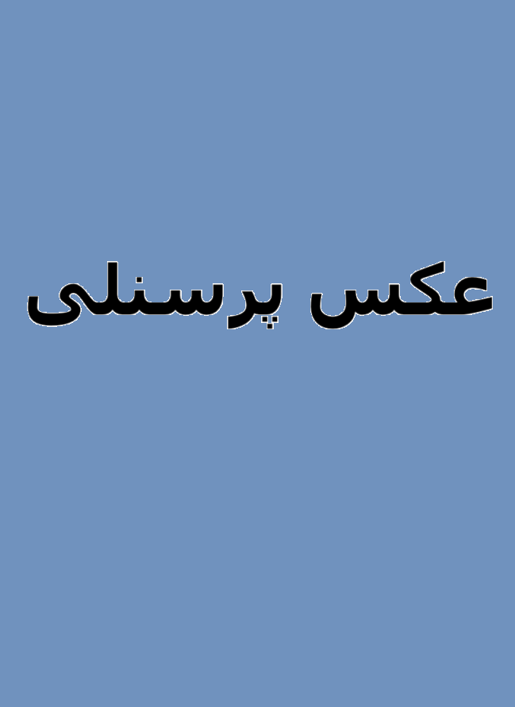

محمد مهدی قاسمی

خلاصه رزومه
من توسعهدهنده و طراح چندرسانهای با تجربه در زمینهی برنامهنویسی و طراحی بازی هستم. در برنامهنویسی ویندوز فرم به زبان C# مسلط هستم و مفاهیم پایهای شیگرایی را به خوبی در پروژهها پیاده میکنم. علاوه بر برنامهنویسی، تجربهی قابل توجهی در موتور بازیسازی Unity دارم و قادر هستم پروژههای بازی سهبعدی را از مرحله طراحی تا پیادهسازی تکمیل کنم. در زمینهی طراحی و هنر دیجیتال، توانایی کار با Illustrator برای طراحی گرافیکی و ایجاد محتوای بصری حرفهای را دارم و با Blender سطح ابتدایی طراحی سهبعدی را تجربه کردهام. همچنین در طراحی وب و ویرایش ویدئو در سطح متوسط فعالیت کرده و پروژههایی با کیفیت قابل قبول انجام دادهام.